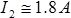

2. Ãðàôè÷åñêèå ìåòîäû ðàñ÷åòà íåëèíåéíûõ öåïåé
Ðàññìîòðèì ðàñ÷åò ïðîñòåéøèõ ðåçèñòèâíûõ öåïåé, ñîäåðæàùèõ íåëèíåéíûå ýëåìåíòû, ãðàôè÷åñêèìè ìåòîäàìè. Ïðè ýòîì ñëåäóåò èìåòü â âèäó, ÷òî â ðÿäå ñëó÷àåâ ìîæíî îáîéòèñü áåç ïîñòðîåíèÿ ñóììàðíûõ ÂÀÕ âåòâåé èëè ñõåìû â öåëîì.
Ïðèìåð 2.1
Äëÿ ñõåìû (ðèñ. 2.1) äàíî: R=20 Îì, ÂÀÕ ÍÝ (ðèñ. 2.2).
Îïðåäåëèòü íàïðÿæåíèå U, ïðè êîòîðîì UR=UÍÝ.
 |
|
| Ðèñ. 2.1 | Ðèñ. 2.2 |
1. Ïîñòðîèì õàðàêòåðèñòèêó  .
.
2.  òî÷êå ïåðåñå÷åíèÿ âîëüò-àìïåðíûõ õàðàêòåðèñòèê ëèíåéíîãî è íåëèíåéíîãî ýëåìåíòîâ íàïðÿæåíèÿ íà ýòèõ ýëåìåíòîâ ðàâíû (ýëåìåíòû ñîåäèíåíû ïîñëåäîâàòåëüíî , è òîê îäèí è òîò æå):

3.  ñîîòâåòñòâèè ñ çàêîíîì Êèðõãîôà äëÿ ñõåìû ïîëó÷èì:

Ïðèìåð 2.2
Äëÿ ñõåìû (ðèñ. 2.3) äàíî:  âîëüò-àìïåðíûå õàðàêòåðèñòèêè íåëèíåéíûõ ýëåìåíòîâ ïðåäñòàâëåíû íà ðèñ. 2.4. Îïðåäåëèòü âñå òîêè.
âîëüò-àìïåðíûå õàðàêòåðèñòèêè íåëèíåéíûõ ýëåìåíòîâ ïðåäñòàâëåíû íà ðèñ. 2.4. Îïðåäåëèòü âñå òîêè.
| Ðèñ. 2.3 | Ðèñ. 2.4 |
1. Òàê êàê íàïðÿæåíèå U ÿâëÿåòñÿ è íàïðÿæåíèåì íà ïåðâîì íåëèíåéíîì ýëåìåíòå, òî ïî ÂÀÕ ýòîãî ýëåìåíòà îïðåäåëÿåì òîê â íåì:
2. Äëÿ îïðåäåëåíèÿ òîêà âî âòîðîé âåòâè íåîáõîäèìî íàéòè íàïðÿæåíèå íà âòîðîì íåëèíåéíîì ýëåìåíòå.  ñîîòâåòñòâèè ñ óðàâíåíèåì  ïîëó÷èì
ïîëó÷èì  Ñëåäîâàòåëüíî,
Ñëåäîâàòåëüíî, 
3. Òîê â íåðàçâåòâëåííîé ÷àñòè ñõåìû ðàâåí:
Ïðèìåð 2.3.
Äëÿ ñõåìû (ðèñ. 2.5) äàíî: íàïðÿæåíèå íà ïàðàëëåëüíîì ó÷àñòêå öåïè  âîëüò-àìïåðíûå õàðàêòåðèñòèêè íåëèíåéíûõ ýëåìåíòîâ ïðåäñòàâëåíû íà ðèñ. 2.6.
âîëüò-àìïåðíûå õàðàêòåðèñòèêè íåëèíåéíûõ ýëåìåíòîâ ïðåäñòàâëåíû íà ðèñ. 2.6.
Îïðåäåëèòü ïîäâîäèìîå ê ñõåìå íàïðÿæåíèå.
| Ðèñ. 2.5 | Ðèñ. 2.6 |
1. Ïîëüçóÿñü ÂÀÕ íåëèíåéíûõ ýëåìåíòîâ ÍÝ2 è ÍÝ3, íàïðÿæåíèå íà êîòîðûõ çàäàíî, îïðåäåëÿåì òîêè â ýòèõ âåòâÿõ:
2. Îïðåäåëÿåì òîê â ÍÝ1: 
3. Ïî ÂÀÕ ÍÝ1 îïðåäåëÿåì íàïðÿæåíèå íà ýòîì ýëåìåíòå, îíî ðàâíî:
4. Ñëåäîâàòåëüíî, 
Ïðèìåð 2.4
Äëÿ ñõåìû (ðèñ. 2.7) äàíî: R=30 Îì, íàïðÿæåíèå  âîëüò-àìïåðíàÿ õàðàêòåðèñòèêà îäèíàêîâûõ íåëèíåéíûõ ýëåìåíòîâ (ðèñ. 2.8).
âîëüò-àìïåðíàÿ õàðàêòåðèñòèêà îäèíàêîâûõ íåëèíåéíûõ ýëåìåíòîâ (ðèñ. 2.8).
Îïðåäåëèòü òîêè.
| Ðèñ. 2.7 | Ðèñ. 2.8 |
1. Òîê I2 îïðåäåëÿåì ïî ÂÀÕ ÍÝ, òàê êàê íàïðÿæåíèå íà íåì èçâåñòíî:  .
.
2. Òàê êàê ÍÝ îäèíàêîâûå, òî . Ñëåäîâàòåëüíî, íàïðÿæåíèå íà ñîïðîòèâëåíèè R è òîê â ýòîé âåòâè ðàâíû ñîîòâåòñòâåííî: 
3. Òîê
Ïðèìåð 2.5
Äëÿ ñõåìû (ðèñ. 2.9) äàíî: íàïðÿæåíèå âîëüò-àìïåðíàÿ õàðàêòåðèñòèêà îäèíàêîâûõ íåëèíåéíûõ ýëåìåíòîâ (ðèñ. 2.10). Îïðåäåëèòü òîêè.
 |
|
| Ðèñ. 2.9 | Ðèñ. 2.10 |
1. Òîê I2 îïðåäåëÿåì ïî ÂÀÕ ÍÝ, òàê êàê íàïðÿæåíèå íà íåì èçâåñòíî: .
2. Òàê êàê ÍÝ îäèíàêîâûå, òî íàïðÿæåíèå íà êàæäîì èç äâóõ ïîñëåäîâàòåëüíî ñîåäèíåííûõ ÍÝ ðàâíû 0.5U = 35 Â. Ñëåäîâàòåëüíî, òîê I1 = 1.4 A.
3. Òîê I = I1 + I2 = 3.2 A.